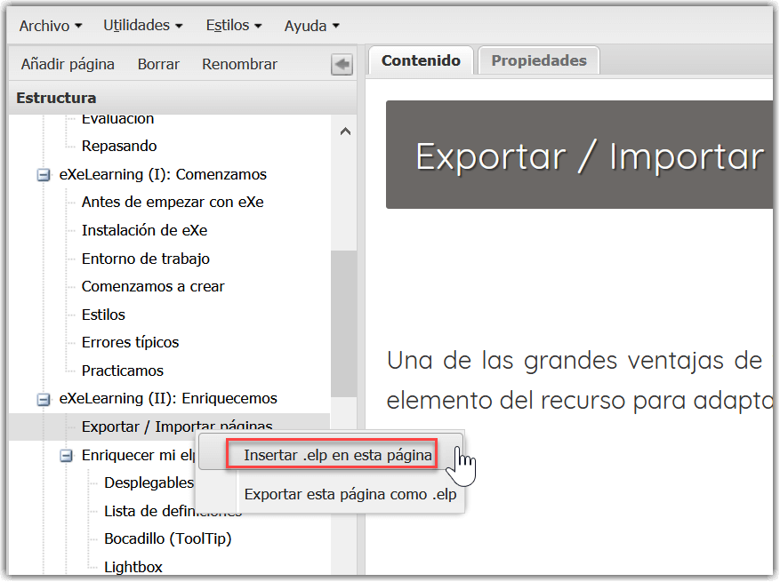
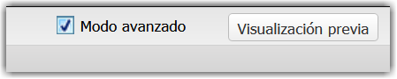
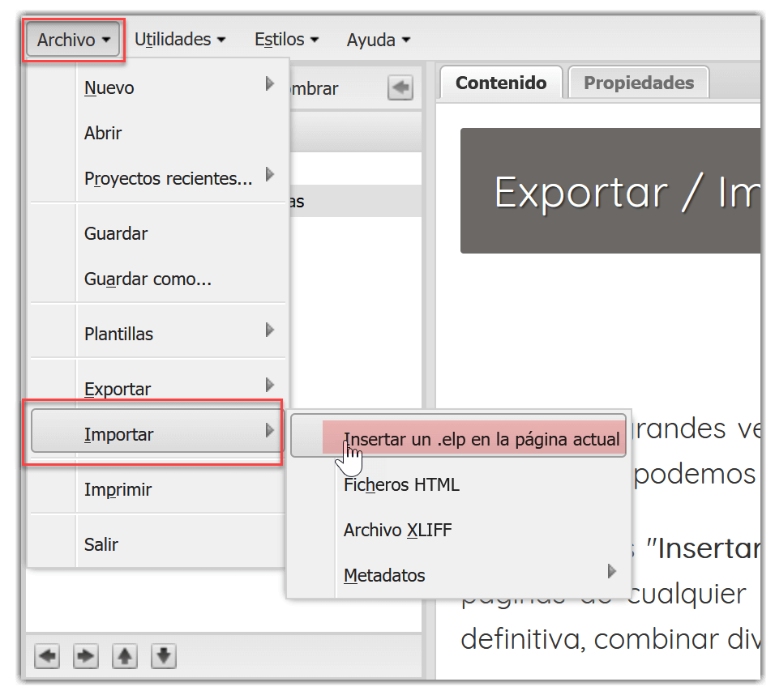
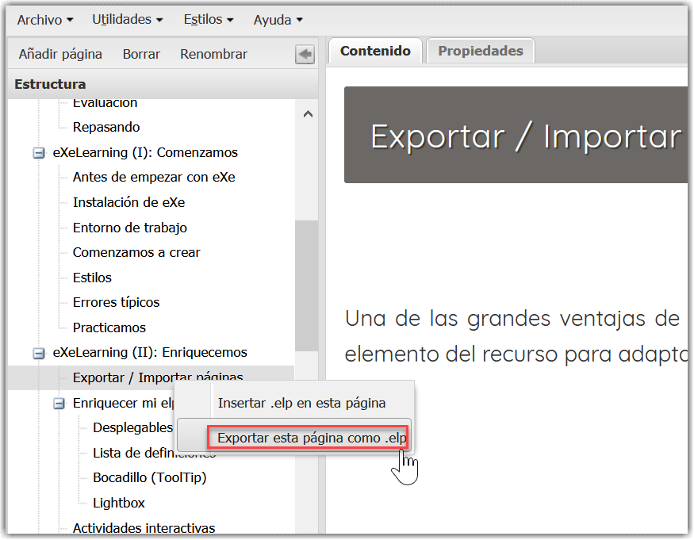
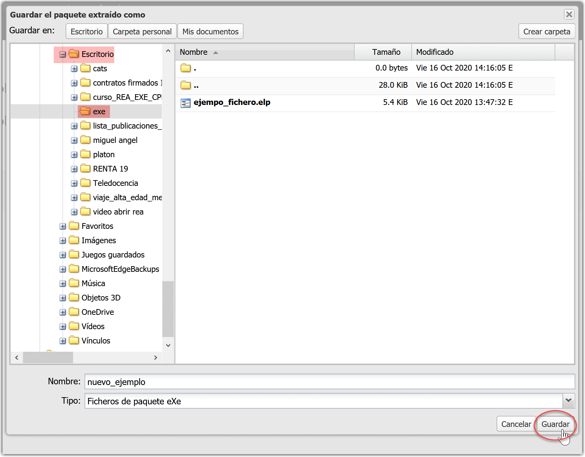

Una de las grandes ventajas de trabajar con REA es que son modificables. Con el editor de contenido eXeLearning podemos modificar cualquier elemento del recurso para adaptarlo a nuestras necesidades. Las opciones "Insertar .elp en la página actual" y "Exportar la página como .elp" nos dan la posibilidad de extraer o insertar páginas de cualquier recurso en nuestro material. Es decir, podemos añadir una página de otro recurso en el nuestro, o, en definitiva, combinar diversos recursos realizados con eXeLearning.
Guía de creación de REA con eXeLearning
Exportar / Insertar páginas
Insertar elp en esta página
Es un proceso muy sencillo. Los pasos que debemos seguir son:
- Con el ratón nos situamos en el índice o árbol de contenido sobre el lugar en el que deseamos importar o añadir una página o .elp.
- Hacemos clic sobre botón derecho.
- Escogemos "Insertar .elp en esta página".
- Se abrirá una pestaña de navegación en la que se mostrará el contenido guardado en nuestro ordenador. Aquí seleccionamos el archivo con extensión .elp que deseamos incluir y clicaremos el botón "Abrir".
- Una vez seleccionado, aparecerá como una página nueva al final del árbol de contenidos. Ahora podemos utilizar las flechas para subir y bajar la página hasta el lugar adecuado.

Insertar elp en esta página
Para encontrar los archivos con facilidad es muy importante tener claro en qué carpeta del ordenador hemos guardado nuestro archivo con extensión .elp. Por ejemplo, la imagen posterior es un ejemplo de ventana de navegación donde se observa cómo el fichero a insertar "ejemplo_fichero.elp" se encuentra guardado en una carpeta llamada "exe" que se localiza en el "Escritorio".

Ventana de navegación
A continuación se muestra cómo quedaría el árbol de contenidos de nuestro proyecto, con el nuevo paquete de eXe ya insertado al final. En rojo se señalan las flechas para desplazar el nuevo paquete como una página más del recurso: arriba y abajo, o bien derecha e izquierda.

Árbol de contenidos con nuevo paquete

Para más información, podemos visualizar el vídeo cómo insertar un .elp en eXeLearning.
Con el modo avanzado seleccionado, también podemos realizar esta acción desde el menú. Para ello seleccionamos el modo avanzado en la esquina superior derecha:

Utilizaremos la opción de Archivo > Importar > Insertar .elp en esta página cuando queramos añadir un archivo realizado con eXe, que habremos descargado en nuestro ordenador previamente.
- Con el cursor nos situamos sobre "Archivo" y hacemos clic en el botón izquierdo.
- Desplazamos el ratón hasta "Importar".
- Escogemos la opción "Insertar .elp en esta página".
- Se abrirá una pestaña de navegación en la que se mostrará el contenido guardado en nuestro ordenador. Aquí seleccionamos el archivo con extensión .elp que deseamos incluir y haremos clic el botón "Abrir".
- Una vez seleccionado, aparecerá como una página nueva al final del árbol de contenidos. Ahora podemos utilizar las flechas para subir y bajar la página hasta el lugar adecuado.

Insertar .elp en página actual
A continuación repetiremos los pasos anteriormente descritos.
Exportar esta página como elp
El proceso es muy parecido al anterior. Nos puede ser de mucha utilidad para guardar partes de proyectos que son de nuestro interés y luego insertarlas en nuevas creaciones, siguiendo la filosofía de remezclar de los Recursos Educativos Abiertos.
Los pasos que debemos seguir son:
- Con el ratón nos situamos en el índice o árbol de contenido sobre el lugar en el que deseamos importar o añadir una página o .elp
- Hacemos clic sobre botón derecho
- Escogemos "Exportar esta página como .elp"
- Se abrirá una ventana de navegación donde podremos dar un nuevo nombre al paquete de eXe que vamos a insertar

Exportar página
En el siguiente ejemplo se observa una ventana de diálogo abierta para guardar una página como un archivo independiente con extensión .elp. Se observa que el archivo .elp es renombrado como "nuevo_ejemplo" y se localizará en un archivo del Escritorio llamado "exe".

Guardar un archivo .elp en nuestro ordenador, a partir de una página

Para más información podemos consultar el vídeo cómo exportar una página como .elp en eXeLearning.
En modo avanzado
Seleccionamos el modo avanzado en la esquina superior derecha:
Utilizaremos la opción de Archivo > Exportar > Exportar la página actual como .elp. una vez que hemos seleccionado la página que deseamos guardar.
- En el árbol de contenidos seleccionaremos el nodo que deseamos utilizar.
- Con el ratón sobre esta parte del contenido, clicaremos el botón derecho y se mostrará la opción de "Exportar esta página como .elp".
- Se abrirá una ventana de navegación donde podremos dar un nuevo nombre al paquete de eXe que vamos a insertar.

Exportar página como .elp desde Archivo
Obra publicada con Licencia Creative Commons Reconocimiento Compartir igual 4.0